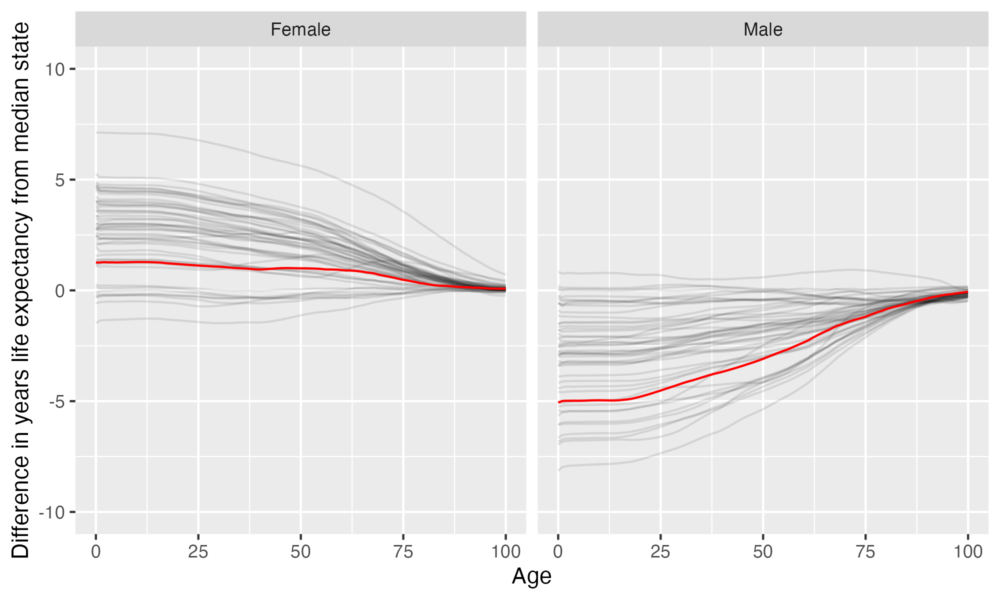

Southern Wesleyan University
Southern Wesleyan University is located in Central, South Carolina. It is a private not-for-profit, 4-year or above institution.
From Wikipedia: Southern Wesleyan University is a private Christian university in Central, South Carolina. It was founded in 1906 by what is now the Wesleyan Church. The institution is accredited by the Southern Association of Colleges and Schools Commission on Colleges to award associate, bachelor’s, master’s, and doctoral degrees. The university offers approximately 35 major areas of study for undergraduates and also offers graduate and doctoral degrees in the areas of business and education. The university serves approximately 1,600 students. There are more than 800 undergraduates enrolled at the main campus in Central, South Carolina. In addition, undergraduate, graduate, and doctoral programs are offered in a fully online format. The school has 18 intercollegiate athletic teams that compete in the National Collegiate Athletic Association (NCAA) Division II as well as the National Christian College Athletic Association (NCCAA). Since 2007, the university’s athletic teams have won 17 National Christian College Athletic Association (NCCAA) national championship titles including titles in men’s baseball, women’s basketball, men’s soccer, individual men’s golf, women’s indoor track and field events, women’s outdoor track and field events, and men’s outdoor track and field events.
Notes
These are items that bear looking into more closely.
California considers the state this institution is in to have one or more anti-LGBTQ+ laws. It prohibits California-sponsored travel to this state as a safety measure. See more here.
This institution’s full-time undergraduate enrollment has tended to decrease over time.
From 2011 to 2021, full time undergraduate enrollment dropped from 1412 to 719, a decline of 49.1%
Overview of institution
Institution kind: Master’s Colleges & Universities: Small Programs
Undergrad program: Professions plus arts & sciences, some graduate coexistence
Graduate program: Postbaccalaureate: Business-dominant, with other professional programs
Enrollment profile: High undergraduate (see more details below)
Average net price for undergrads on financial aid: $19,479 (1.4 times the equivalent cost of Harvard).
Average net price for families with $30K-48K income: $17,366 (This is $15,970 more expensive than what Harvard costs for equivalent students).
Actual price for your family: Go here to see what your family may be asked to pay. It can be MUCH lower than the average price but also higher for some.
Size and setting: Four-year, very small, primarily residential
In state percentage: 60.3% of first year students come from South Carolina
In US percentage: 99.5% of first year students come from the US
Graduation rate (within 6 years) for students seeking a Bachelors: 52.4% (this is what is usually reported as “graduation rate”)
Graduation rate (within 4 years) for students seeking a Bachelors: 44.9%
Percent of students seeking a Bachelors who transfer out of this institution: 30.3%
Student to tenure-stream faculty ratio: 15.7 (undergrads to tenure-stream faculty) [Tenure explained]
Student to faculty ratio: 15.7 (undergrads to all faculty)
Degrees offered: Associate’s degree, Bachelor’s degree, Postbaccalaureate certificate, Master’s degree, Doctor’s degree: research scholarship
Schedule: Semester
Institution provides on campus housing: Yes
Dorm capacity: There are enough dorm beds for 570 students
Freshmen required to live on campus: No
Meal plan: Yes, number of meals in the maximum meal plan offered
Covid vaccination requirement for students: This institution was never reported as requiring covid vaccination for students (based on info from here)
Covid vaccination requirement for faculty/staff: This institution was never reported as requiring covid vaccination for faculty and/or staff (based on info from here)
Advanced placement (AP) credits used: Yes
Disabilities: 6 percent of undergrads are registered as having disabilities.
Overview of location
- Abortion in this state: Restrictive (based on https://states.guttmacher.org/policies/ as of May 10, 2023)
- Gun law stringency: F (higher grade = more stringent)
- State rep support for contraception: 28.6% of US reps from this state voted in favor of legal protections for contraception.
- State rep support for recognizing same-sex and interracial marriage: 42.9% of US reps from this state voted in favor of requiring states to recognize same-sex and interracial marriages performed in other states
- Anti-trans legislative risk: High risk (based on Erin Reed’s work, as of June 25, 2023)
- Ecological region: Southeastern mixed forests
- Biome: Temperate Broadleaf & Mixed Forests
- Distance to mountains: 17.8 miles to Appalachian Mountains
- Climate: See overview at WeatherSpark
Similar institutions
This is using information about school size, acceptance rate, yield rate, graduation rate, cost, athletic conference, and similar metrics, but it can miss important axes of similarity (for example, culinary versus hair styling schools).
Map
Enrollment
| Southern Wesleyan University | Change over ≤ 11 years | Trend | Conference Carolinas | Master’s Colleges & Universities: Small Programs | |
|---|---|---|---|---|---|
| Undergrads (full time) | 719 (2021) |

|
↓ -77 per year |
||
| Undergrads (part time) | 324 (2021) |

|
|||
| Grad students (full time) | 48 (2021) |

|
↓ -49 per year |
||
| Grad students (part time) | 209 (2021) |

|
|||
| Admission rate (undergrads) | 57% (2021) |

|
|||
| Yield rate (percent of applicants offered undergraduate admission who accept) | 38% (2021) |

|
✪✪✪✪✪ Better (higher) than 88% |
✪✪✪✪✪ Better (higher) than 85% |
|
| Graduation rate (bachelors in 6 years) | 52% (2021) |

|
✪✪✪✪✪ Better (higher) than 81% |
✪✪✪ Better (higher) than 49% |
|
| Transfer out rate (bachelors) | 30% (2020) |

|
✪✪✪✪✪ Better (lower) than 88% |
✪✪ Better (lower) than 30% |
Student financing
At many universities, almost no students pay the listed tuition and fees (“sticker price”): instead, their financial aid package lowers this dramatically, but how much students pay can vary substantially based on family income and other factors. The tuition below is the average across many students receiving aid: your family may be asked to pay less or more than this.
| Southern Wesleyan University | Change over ≤ 11 years | Trend | Conference Carolinas | Master’s Colleges & Universities: Small Programs | |
|---|---|---|---|---|---|
| Average net price (for students awarded aid) | $19,479 (2020) |

|
↑ $292 per year |
✪✪✪ Better (lower) than 56% |
✪✪✪ Better (lower) than 50% |
| Undergrads getting federal aid | 43% (2021) |

|
✪✪✪ Better (higher) than 44% |
✪✪ Better (higher) than 31% |
|
| Undergrads getting any aid | 100% (2021) |

|
✪✪✪✪✪ Better (higher) than 100% |
✪✪✪✪✪ Better (higher) than 100% |
|
| Undergrads getting Pell grants | 39% (2021) |

|
✪✪ Better (higher) than 38% |
✪✪✪ Better (higher) than 41% |
Teaching
| Southern Wesleyan University | Change over ≤ 11 years | Conference Carolinas | Master’s Colleges & Universities: Small Programs | |
|---|---|---|---|---|
| Undergrads per tenure track instructor (lower is better) | 16 (2019) |

|
✪✪✪✪✪ Better (lower) than 90% |
✪✪✪✪✪ Better (lower) than 80% |
| Undergrads per instructor (lower is better) | 16 (2019) |

|
✪✪✪ Better (lower) than 50% |
✪✪✪ Better (lower) than 53% |
| Total instructors | 55 (2020) |

|
||
| Tenure track instructors | 53 (2020) |

|
||
| Non-tenure track instructors | 2 (2020) |

|
Student details
| Southern Wesleyan University | Change over ≤ 11 years | Trend | |
|---|---|---|---|
| Dorm capacity | 570 (2021) |

|
↑ 6.1 per year |
| Percent of undergrads with registered disabilities (≤3 is rounded up to 3) | 6% (2021) |

|
Institution finances
| Southern Wesleyan University | Change over ≤ 11 years | Trend | Conference Carolinas | Master’s Colleges & Universities: Small Programs | |
|---|---|---|---|---|---|
| Revenue from tution and fees | 55% (2021) |

|
✪ Better (lower) than 6% |
✪✪ Better (lower) than 20% |
|
| Revenue minus expenses | $2.3 M (2021) |

|
✪✪ Better (higher) than 25% |
✪✪ Better (higher) than 30% |
|
| Revenue | $26 M (2021) |

|
|||
| Expenses | $24 M (2021) |

|
|||
| Assets | $41 M (2021) |

|
↑ $327,938 per year |
✪ Better (higher) than 19% |
✪ Better (higher) than 20% |
Graduation rates
Graduation rates for bachelor’s degrees within 150% of normal time (6 years for a 4-year degree). Note that this uses US federal demographic data: it only has two genders and a specified set of ethnicities and races. For groups with small numbers, the graduation rate may be highly variable year to year (do all three people in this group graduate this year or just two of three, for example).
| Southern Wesleyan University | Change over ≤ 11 years | Conference Carolinas | Master’s Colleges & Universities: Small Programs | |
|---|---|---|---|---|
| Total | 52% (2021) |

|
✪✪✪✪✪ Better (higher) than 81% |
✪✪✪ Better (higher) than 49% |
| Men | 47% (2021) |

|
✪✪✪✪ Better (higher) than 80% |
✪✪✪ Better (higher) than 52% |
| Women | 60% (2021) |

|
✪✪✪✪✪ Better (higher) than 88% |
✪✪✪ Better (higher) than 55% |
| American Indian or Alaska Native men | 100% (2019) |

|
✪✪✪✪✪ Better (higher) than 100% |
✪✪✪✪✪ Better (higher) than 100% |
| American Indian or Alaska Native women | 0% (2018) |

|
✪✪✪✪ Better (higher) than 62% |
✪✪ Better (higher) than 37% |
| Asian men | 100% (2020) |

|
✪✪✪✪✪ Better (higher) than 100% |
✪✪✪✪✪ Better (higher) than 100% |
| Asian women | 0% (2019) |

|
✪✪ Better (higher) than 33% |
✪ Better (higher) than 15% |
| Black or African American men | 22% (2021) |

|
✪✪ Better (higher) than 33% |
✪✪ Better (higher) than 33% |
| Black or African American women | 60% (2021) |

|
✪✪✪✪✪ Better (higher) than 88% |
✪✪✪✪✪ Better (higher) than 85% |
| Hispanic men | 43% (2021) |

|
✪✪✪✪ Better (higher) than 79% |
✪✪✪✪ Better (higher) than 62% |
| Hispanic women | 40% (2021) |

|
✪✪ Better (higher) than 25% |
✪✪ Better (higher) than 32% |
| White men | 57% (2021) |

|
✪✪✪✪✪ Better (higher) than 100% |
✪✪✪✪ Better (higher) than 63% |
| White women | 68% (2021) |

|
✪✪✪✪✪ Better (higher) than 94% |
✪✪✪✪ Better (higher) than 68% |
| Two or more races men | 67% (2021) |

|
✪✪✪✪✪ Better (higher) than 100% |
✪✪✪✪✪ Better (higher) than 85% |
| Two or more races women | 0% (2021) |

|
✪✪ Better (higher) than 21% |
✪ Better (higher) than 5% |
| Nonresident alien men | 43% (2021) |

|
✪✪✪ Better (higher) than 43% |
✪✪✪ Better (higher) than 47% |
| Nonresident alien women | 50% (2021) |

|
✪✪✪ Better (higher) than 42% |
✪✪✪ Better (higher) than 45% |
Freshmen demographics
Demographic data for first time degree-seeking students. Note that this uses US federal demographic data: it only has two genders and a specified set of ethnicities and races.
| Southern Wesleyan University | Change over ≤ 11 years | |
|---|---|---|
| Men (percent freshmen) | 34% (2021) |

|
| Women (percent freshmen) | 66% (2021) |

|
| American Indian or Alaska Native men (percent freshmen) | 0% (2021) |

|
| American Indian or Alaska Native women (percent freshmen) | 0% (2021) |

|
| Asian men (percent freshmen) | 0% (2021) |

|
| Asian women (percent freshmen) | 1.9% (2021) |

|
| Black or African American men (percent freshmen) | 6.2% (2021) |

|
| Black or African American women (percent freshmen) | 8.7% (2021) |

|
| Hispanic men (percent freshmen) | 4.3% (2021) |

|
| Hispanic women (percent freshmen) | 4.3% (2021) |

|
| Native Hawaiian or Other Pacific Islander men (percent freshmen) | 0% (2021) |

|
| Native Hawaiian or Other Pacific Islander women (percent freshmen) | 0% (2021) |

|
| White men (percent freshmen) | 20% (2021) |

|
| White women (percent freshmen) | 44% (2021) |

|
| Two or more races men (percent freshmen) | 0.6% (2021) |

|
| Two or more races women (percent freshmen) | 3.7% (2021) |

|
| Race ethnicity unknown men (percent freshmen) | 1.2% (2021) |

|
| Race ethnicity unknown women (percent freshmen) | 2.5% (2021) |

|
| Nonresident alien men (percent freshmen) | 1.2% (2021) |

|
| Nonresident alien women (percent freshmen) | 0.6% (2021) |

|
Freshmen geography
| Southern Wesleyan University | Change over ≤ 11 years | |
|---|---|---|
| In state | 60% (2020) |

|
| US | 100% (2020) |

|
| Not reported | 0% (2020) |

|
Tenure track faculty
Tenure track faculty are those who are eligible for tenure. This includes both pre-tenure and tenured faculty. Once faculty get tenure, they are (generally) protected from being fired for intellectual reasons, helping to ensure their freedom in teaching and research. They can still lose their positions for misconduct, financial problems, not fulfilling their duties, or other reasons. Note that this chart uses US federal demographic data: it only has two genders and a specified set of ethnicities and races.
| Southern Wesleyan University | Change over ≤ 11 years | |
|---|---|---|
| Total (tenure-track count) | 53 (2020) |

|
| Women (tenure-track count) | 21 (2020) |

|
| Men (tenure-track count) | 32 (2020) |

|
| American Indian or Alaska Native (tenure-track count) | 0 (2020) |

|
| Asian (tenure-track count) | 2 (2020) |

|
| Black or African American (tenure-track count) | 6 (2020) |

|
| Hispanic or Latino (tenure-track count) | 1 (2020) |

|
| Native Hawaiian or other Pacific Islander (tenure-track count) | 0 (2020) |

|
| White (tenure-track count) | 40 (2020) |

|
| Two or more races (tenure-track count) | 2 (2020) |

|
| Nonresident alien (tenure-track count) | 2 (2020) |

|
Non-tenure track faculty
Non-tenure track faculty are not eligible for tenure. Some are hired one semester at a time, some have multi-year contracts. They typically have a higher teaching load than tenure track faculty, leaving less time for research or other creative endeavors. They are also easier to fire than tenured faculty. Sometimes they are external experts (a noted musician, a former senator) who are hired to teach some classes without the expected permanence of a tenure-track position. Note that this chart uses US federal demographic data: it only has two genders and a specified set of ethnicities and races.
| Southern Wesleyan University | Change over ≤ 11 years | |
|---|---|---|
| Total (non-tenure-track count) | 2 (2020) |

|
| Women (non-tenure-track count) | 2 (2020) |

|
| Men (non-tenure-track count) | 0 (2020) |

|
| American Indian or Alaska Native (non-tenure-track count) | 0 (2020) |

|
| Asian (non-tenure-track count) | 0 (2020) |

|
| Black or African American (non-tenure-track count) | 0 (2020) |

|
| Hispanic or Latino (non-tenure-track count) | 0 (2020) |

|
| Native Hawaiian or other Pacific Islander (non-tenure-track count) | 0 (2020) |

|
| White (non-tenure-track count) | 2 (2020) |

|
| Two or more races (non-tenure-track count) | 0 (2020) |

|
| Nonresident alien (non-tenure-track count) | 0 (2020) |

|
Library facilities
| Southern Wesleyan University | Change over ≤ 11 years | Trend | Conference Carolinas | Master’s Colleges & Universities: Small Programs | |
|---|---|---|---|---|---|
| Number of physical books | 59,142 (2021) |

|
↓ -7,342 per year |
✪ Better (higher) than 19% |
✪✪ Better (higher) than 29% |
| Physical library circulations per students and faculty | 2.6 (2019) |

|
✪✪✪✪ Better (higher) than 67% |
✪✪✪ Better (higher) than 53% |
|
| Digital library circulations per students and faculty | 126 (2019) |

|
✪✪✪✪✪ Better (higher) than 100% |
✪✪✪✪✪ Better (higher) than 91% |
Life expectancy
This hopefully will not be relevant for potential students, but it may be for people moving to an area longer term, such as faculty and staff choosing where to live. This uses information from US National Vital Statistics Reports for 2020; like much federal data, it assumes people are male or female. For age difference from median, it is from the median state, averaging across all genders (one consequence of this is that the difference from the median life expectancy is almost always negative for men).
- Life expectancy at birth: 78 years women (1.3 years over the median), 71.7 years men (5.1 years below the median)
- Remaining life expectancy at age 18: 60.6 years women (1.2 years over the median), 54.5 years men (4.9 years below the median)
- Remaining life expectancy at age 30: 49.2 years women (1.1 years over the median), 43.9 years men (4.2 years below the median)
- Remaining life expectancy at age 45: 35.5 years women (1 years over the median), 31.1 years men (3.4 years below the median)
- Remaining life expectancy at age 60: 22.9 years women (0.9 years over the median), 19.6 years men (2.3 years below the median)
We can also plot the extra / fewer years of life expected for this state (red) compared to other states (dark gray) at each age. Again, this is normalized for the median state.

SAT scores
| Southern Wesleyan University | Change over ≤ 11 years | |
|---|---|---|
| Applicants submitting SAT | 45% (2021) |

|
| SAT Evidence Based Reading and Writing 25th percentile score | 500 (2021) |

|
| SAT Evidence Based Reading and Writing 75th percentile score | 598 (2021) |

|
| SAT Math 25th percentile score | 480 (2021) |

|
| SAT Math 75th percentile score | 570 (2021) |

|
ACT scores
| Southern Wesleyan University | Change over ≤ 11 years | |
|---|---|---|
| Applicants submitting ACT | 36% (2021) |

|
| ACT Composite 25th percentile score | 18 (2021) |

|
| ACT Composite 75th percentile score | 24 (2021) |

|
| ACT English 25th percentile score | 17 (2021) |

|
| ACT English 75th percentile score | 23 (2021) |

|
| ACT Math 25th percentile score | 16 (2021) |

|
| ACT Math 75th percentile score | 24 (2021) |

|